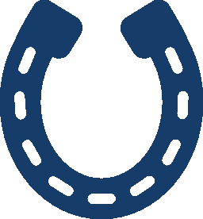
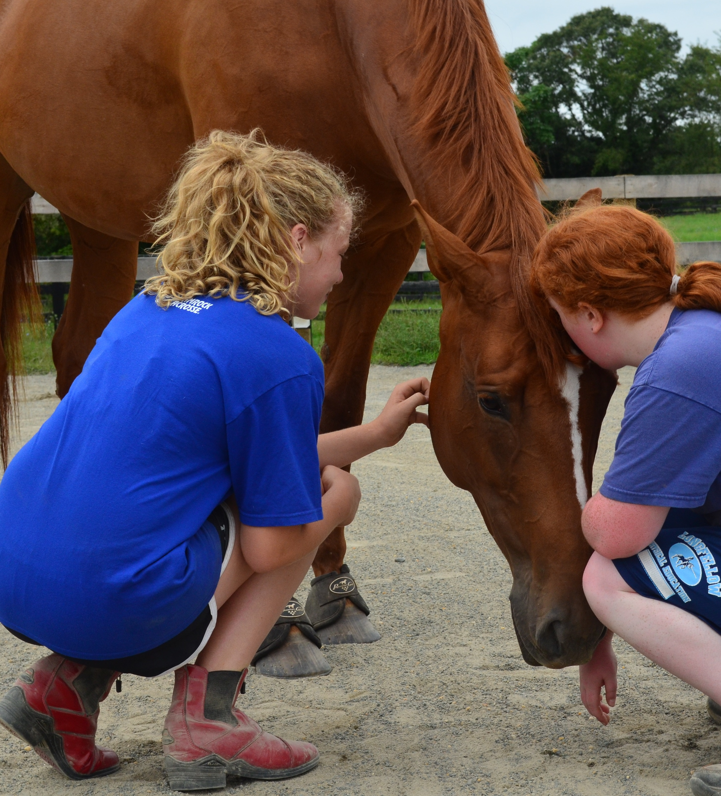
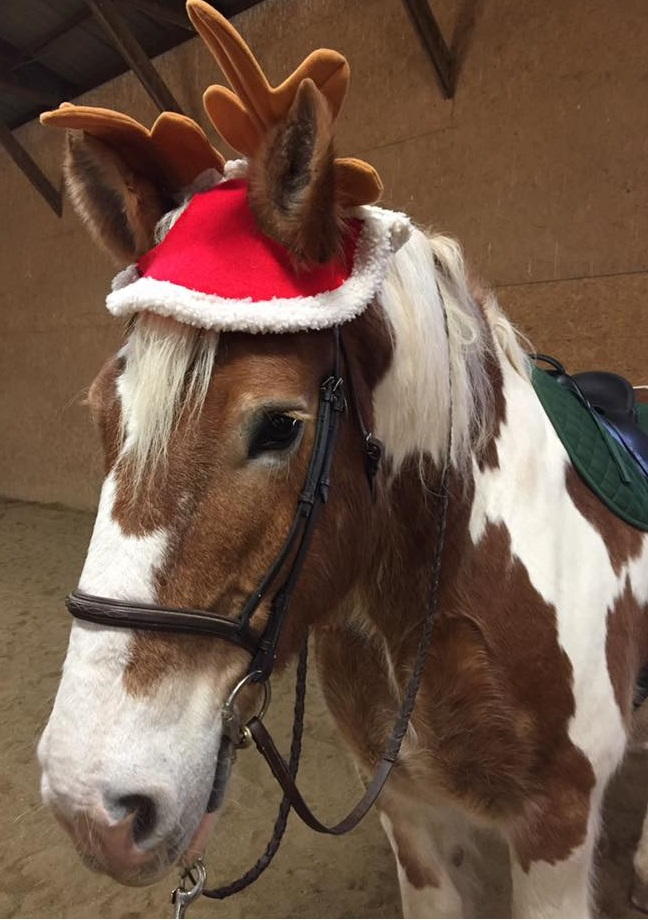
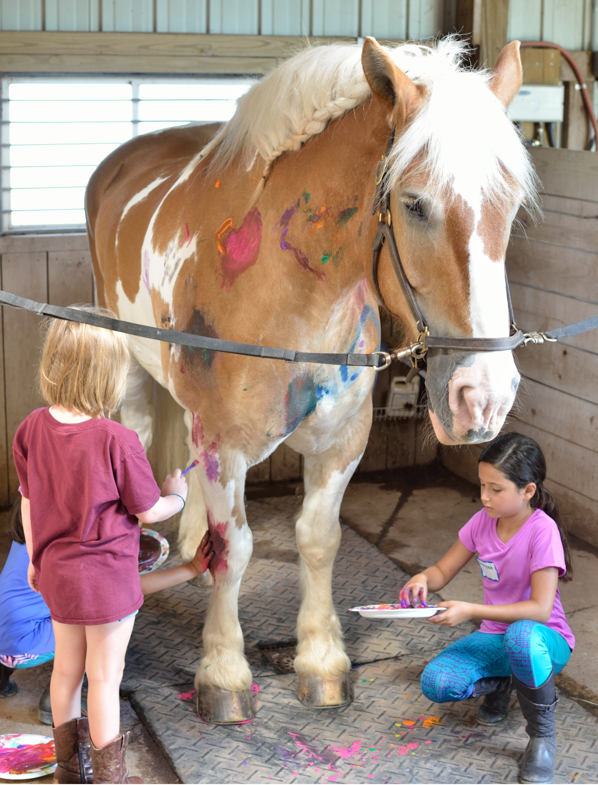
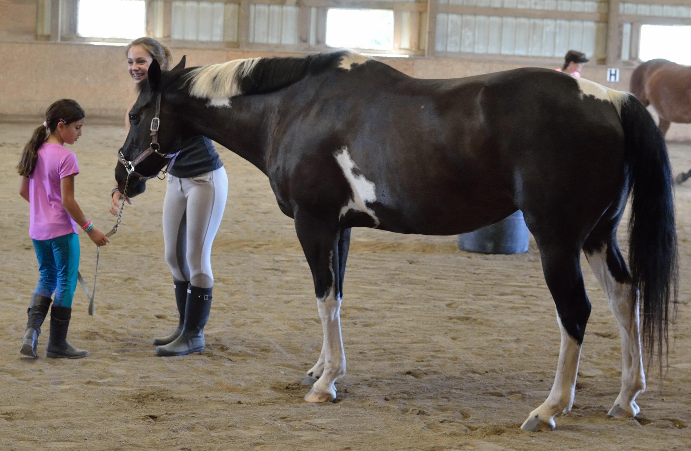
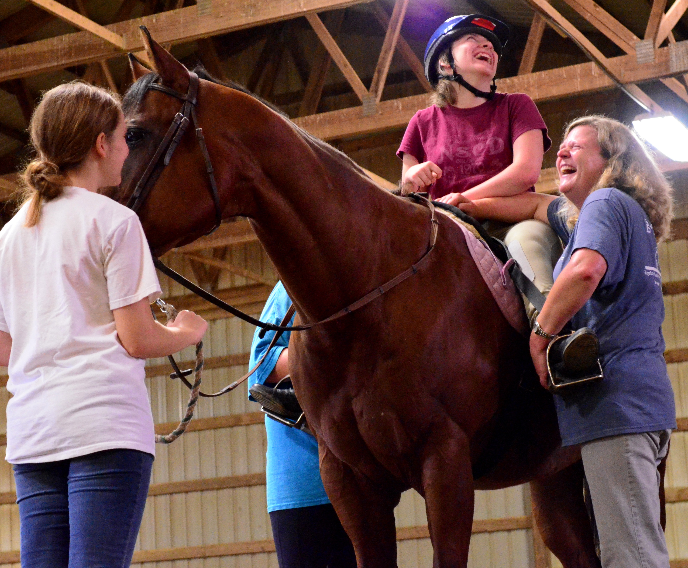
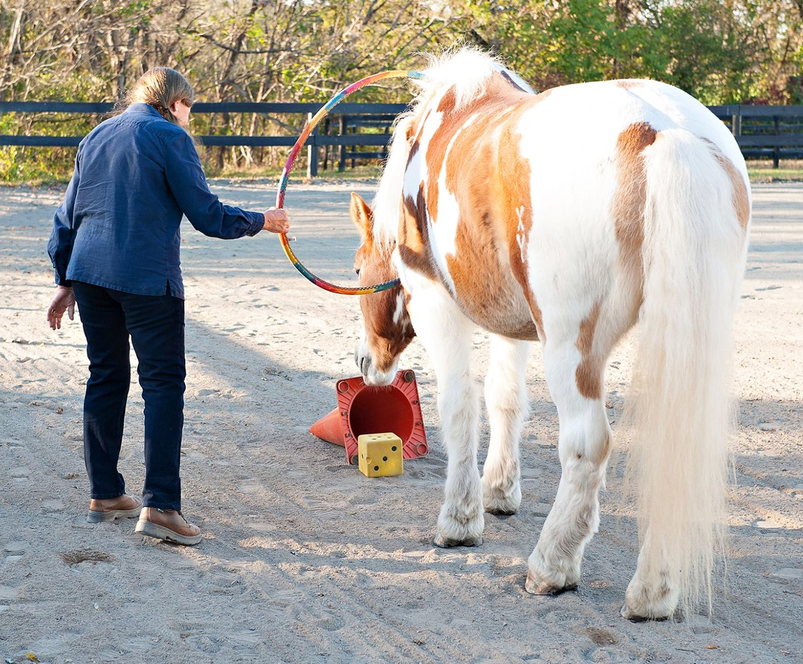
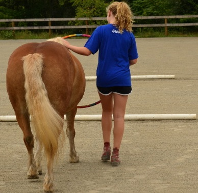
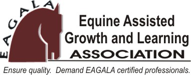
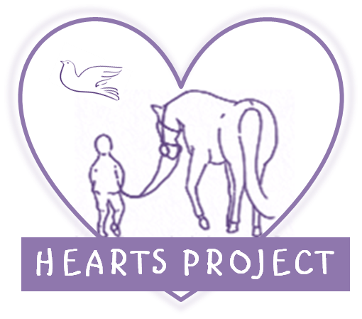

s
Bridle Paths: Programs

OUR TEAM
STAFF
HORSES
CALENDAR
PROGRAMS
SUPPORT US
DONATE
VOLUNTEER
CONTACT
OUR PROGRAMS
*Student forms are in the questions below.
Q: Why Horses?
 Despite centuries of domestication, horses are prey animals. As such, horses' instincts render them exquisitely sensitive to their environments, and to the non-verbal communication of the people with whom they come in contact. Horses reflect the non-verbal communication of those working with them.
Horses are honest communicators, conveying to clients the message that changes within themselves can result in significant changes in the horses' responses. Horses are social animals and are similar to humans in that they live in communities, or herds. Horses have defined roles within their herds, and observation of the roles and dynamics within herds can demonstrate important parallels to human societal interactions.
Each horse displays distinct personality traits, attitudes, and moods, and clients frequently discover similarities between horse and human traits and behaviors. In these ways, equine-assisted activities provide a unique opportunity for metaphorical learning.
 Horses are large and powerful, which creates a natural opportunity for some to overcome fear and develop confidence. The size and power of the horse are naturally intimidating to many people. Accomplishing a task involving the horse, in spite of those fears, creates confidence and provides for wonderful metaphors when dealing with other intimidating and challenging situations in life. Horses require work, whether in caring for them or working with them.
In an era when immediate gratification and the "easy way" are the norm, horses require people to be engaged in physical and mental work to be successful, a valuable characteristic in all aspects of life.
Q: Who Can Benefit From Programs at Bridle Paths?
 The Bridle Paths program offers innovative trails to connection, in partnership with horses. Through a comprehensive array of mounted and unmounted activities, Bridle Paths provides programs that benefit individuals, families, and the community.
Individuals with special needs can discover opportunities for physical, social, cognitive, psychological, and emotional development. Parents and siblings of individuals with special needs can find support, strength, and commonality. Teachers, caregivers, and friends can discover new and beneficial insights and approaches to everyday and exceptional challenges.
Working with horses can be extremely helpful in addressing emotional and psychological challenges in that it allows - in fact requires - us to be in the moment, authentic, and congruent in body, mind, and spirit. Through mounted and unmounted programs, Bridle Paths offers a safe and supportive environment in which clients can be honest and authentic, think clearly about their challenges, and achieve growth, learning, and healing. Horses are uniquely suited to helping individuals and families address challenges. Horses are prey animals, acutely attuned to their environments and to nonverbal communication, and in they live and engage in a herd environment that offers safety and community.
 Although difficult emotions (such as anxiety, distrust, and perhaps even fear) can arise when working with horses, those emotions can be processed in a safe way, working with the horses and with trained professional staff. Through working with horses, clients can address quite directly such challenges as anger management, self-harm, post-traumatic stress, boundaries, and attachment. Clients work in a natural, outdoor environment, with a strong experiential component that facilitates active learning and problem solving. Clients then can proceed to learning new skills, finding trust, and taking responsible risks with the horses. These skills translate directly to experiences outside the barn environment, and enable clients to reconnect and relate in a different way.
Bridle Paths is honored to serve those who serve our country through an array of equine-assisted activities and therapies for active-duty service members, veterans, and their families.
Bridle Paths also offers field trips, special programs, and demonstrations for groups by prior arrangement.
Q: What Is Therapeutic Riding?
The therapeutic riding program at Bridle Paths offers adapted riding instruction to children and adults with physical, cognitive, behavioral, and emotional needs. In addition to mounted instruction, lessons can also incorporate instruction in grooming, horse care, and other horsemanship matters.
 Where appropriate, we may place riders into group lessons to facilitate the accomplishment of social and communication goals. Lessons are staffed with an instructor certified by
PATH
, as well as enough volunteers, who act as horse leaders and sidewalkers, to conduct the lesson safely.
Each of our therapeutic mounts is carefully selected for temperament, training, and quality of movement, and is generally nonplused by the sights, sounds, and reactions of riders. We recognize the importance of families' involvement in the daily lives and activities of individuals with special needs, and we work very hard to ensure that our program is a warm, welcoming, and accepting place for everyone.
Q: What is Equine-Assisted Psychotherapy?
Julie Fischer McCarter/Shoot Photo Inc.

Equine Assisted Psychotherapy (EAP) is an experiential therapeutic approach that addresses treatment goals using collaborative efforts among a horse professional, licensed therapist, the horse, and the client. Each client-driven session includes hands-on activities with the horses, as well as processing (discussion) of feelings, behaviors, and patterns designed to enable clients to learn about themselves and others.
Clients interact with the horses on the ground and use non-verbal communication, problem-solving, and creative thinking to address a variety of mental health and developmental issues, including: depression; anxiety; sibling, parent, and family conflicts; behavioral issues; communication disorders; attention deficit disorder; and post-traumatic stress disorder (PTSD).
 The meanings that the client assigns to particular activities or interactions with the horses yield significant insights into patterns of behavior and relationships. The EAP process is solution-focused, allowing clients to arrive at their own best solutions. Because of its intensity and effectiveness, EAP is considered a short-term or "brief" approach.
If you are interested in our psychotherapy program, please fill out our
EAP Packet
!
Bridle Paths utilizes The EAGALA Model which is made up of:
The Team Approach
An Equine Specialist, a Mental Health professional, and horses work together with clients in all EAGALA sessions
Focus on the Ground
All EAGALA sessions are on the ground with horses (no mounted work).
Solution-Oriented
The belief that our clients have the best solutions for themselves forms a foundation for the EAGALA approach. Rather than instructing or directing solutions, we allow our clients to experiment, problem-solve, take risks, employ creativity, and find their own solutions that work best for them.
Code of Ethics
EAGALA ensures adherence to a code of ethics and a high standard or professionalism.

Q: How do I register as a rider?
Print, fill out, and mail the
Rider Registration Packet
&
Student Contract
to our mailing address (1909 Woodgate Lane McLean, VA 22101)!
Q: How do I sign up as a volunteer?
Fill out our
Volunteer Form
and we will be in contact with you shortly!
Q: What does a volunteer need to know?
Check out our
Volunteer Manual
to learn everything a BridlePaths volunteer needs to know!
Q:What is the HEARTS Project?
 The HEARTS (Hope Through Equine-Assisted Recovery and Therapy Services) Project includes therapists from the Gil Institute for Trauma Recovery and Education who collaborate with Bridle Paths staff in offering individual, group, and family therapy for Gil Institute clients.
Q:What are Bridle Paths' Professional Affiliations?
Bridle Paths is a member of the
Professional Association of Therapeutic Horsemanship (PATH) International
, the
Therapeutic Riding Association of Virginia (TRAV)
, and the
Equine Assisted Growth and Learning Association (EAGALA)
, and our staff members are certified by PATH and EAGALA.